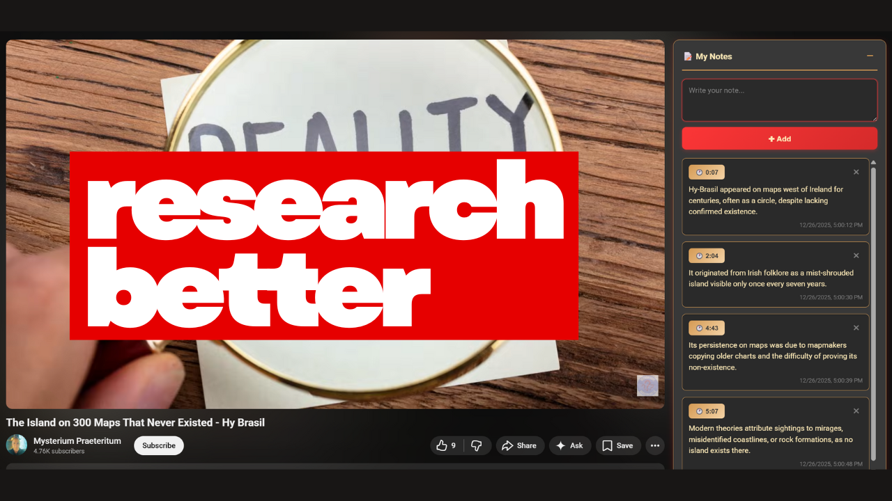
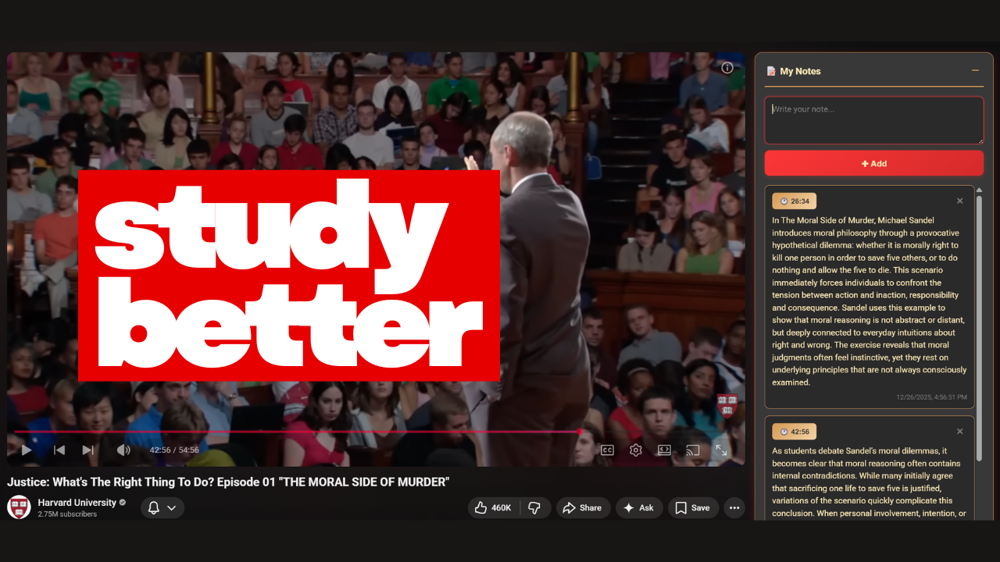
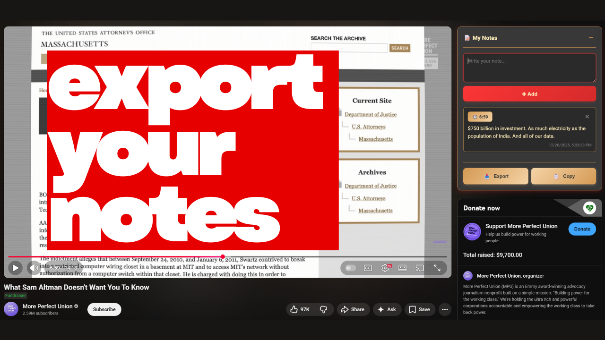

Every note is timestamped. Click it to jump back. Capture screenshots, search, edit, and export everything — all without leaving YouTube.

Built for students, researchers, and anyone who watches YouTube to learn.
chrome.storage.local keyed by video ID. They survive refreshes and browser restarts.The notes panel lives right inside YouTube's sidebar — no extra windows, no context switching.


No account. No setup. Just install and go.
youtube.com/watch page.
Video Notes for YouTube has no backend, no account, and no analytics. Every note is stored in Chrome's local extension storage on your own device. Nothing is ever transmitted to any server — not the video content, not your notes, not anything.
You can verify this yourself: open DevTools → Network tab and watch while adding notes. Zero outbound requests.
All core actions are reachable without touching the mouse.
| Shortcut | Action |
|---|---|
| Alt + N | Focus the note textarea from anywhere on the page |
| Ctrl + Enter | Add note (from textarea) |
| Ctrl + Enter | Save edited note (from edit view) |
| Escape | Cancel editing |
No build step required. Edit files directly and reload in Chrome.
chrome://extensions in your browser.
Free. Private. No signup. Works on any YouTube video.